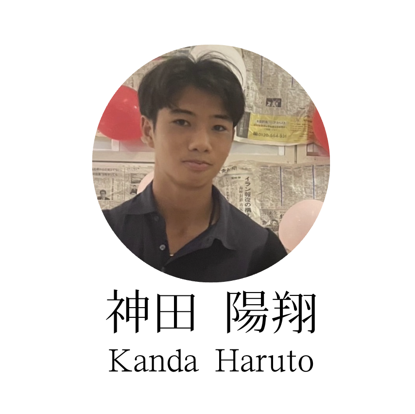

自己紹介Introducing myself

プロフィールProfile
2010年 10月28日誕生
2011年3月 父の仕事で中国の上海・広州で生活
2013年 帰国
2017年 東深沢小学校に入学
2018年 父の仕事でカンボジア プノンペンで生活。ISPP(インターナショナルスクール）に在籍(2023年まで)
2021年 Elementaryの卒業制作（Exibition)で水に取り組む
2023年 かえつ有明中学校 入学
2024年 テニスに打ち込む チームとして:全国私立中学校選手権大会、全国選抜中学校選手権大会、全国中学テニス選手権大会に出場
2026年 現在に至る
 2010:生まれる
2010:生まれる 2018:カンボジアに行く
2018:カンボジアに行く 2020
2020 2021: Exhibitionをやっている時
2021: Exhibitionをやっている時 2023:かえつ入学
2023:かえつ入学 2024/25:部活
2024/25:部活